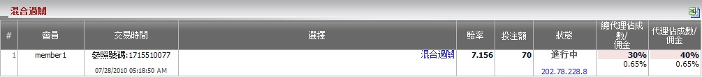
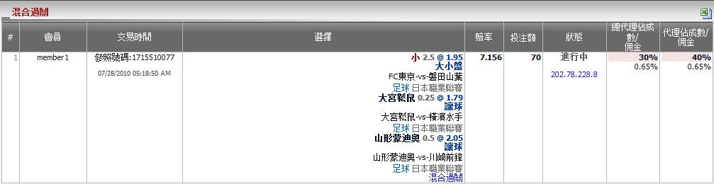

定義:
顯示總代理, 代理基於注單佔成數的輸贏數額, 投注類型之: 混合過關。

對於混合過關投注類型, 您必須在一種運動類型或不同的運動類型混合至少三場賽事。要查看每個混合過關投注的細節, 只需點擊選擇列的 "混合過關"。

| 類型 | 最低投注 | 最高投注 | 您的占成數 |
| 足球混合過關 | 50 | 100 | 30% |
| 混合體育過關 | 40 | 80 | 20% |
注單1: 會員投注於足球, 籃球及網球 --> 最低投注 = 40, 最高投注 = 80, 占成數 = 20%
注單2: 會員只投注於籃球 --> 最低投注 = 40, 最高投注 = 80, 占成數 = 20%
注單3: 會員只投注於足球 --> 最低投注 = 50, 最高投注 = 100, 占成數 = 30%